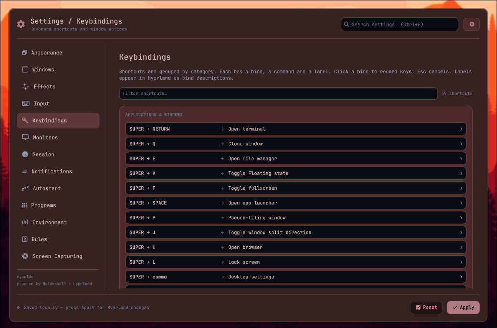

the keyboard is the fast path
Shortcuts
Super is home base. The rest is one keystroke away.
Defaults are just defaults. Change any of them in Settings → Keybindings, then press Apply.
everyday
Open, close, and move
Launching things
- Super + Return Open terminal
- Super + Space Open app launcher
- Super + E Open file manager
- Super + W Open browser
- Super + comma Open desktop settings
- Super + period Open emoji picker
Window control
- Super + Q Close window
- Super + V Toggle floating
- Super + F True fullscreen
- Super + P Pseudo-tile window
- Super + J Toggle split direction
- Super + left click Drag floating window
- Super + right click Resize floating window

workspaces
Ten desktops, no mouse required
Moving around
- Super + 1 … 0 Focus workspace 1–10
- Super + Arrow keys Focus neighboring window
- Super + scroll Cycle through workspaces
- Super + S Toggle scratchpad view
Sending windows
- Super + Shift + 1 … 0 Move window to workspace
- Super + Shift + S Move window to scratchpad
Session and panel
- Super + L Lock screen
- Super + M Power and session menu
- Super + A Cycle action popups
- Super + C Toggle calendar popup
capture
Screenshots, clips, and color
Screenshots
- Print Region screenshot to clipboard
- Ctrl + Print Full active display
- Shift + Print Region screenshot to file
Recording
- Super + Alt + R Start or stop recording
- Super + Alt + V Save the last minute as a clip
- Super + Alt + B Toggle replay buffer
Small utilities
- Super + Alt + C Pick a color and copy its hex
- Super + Alt + I Toggle idle inhibitor
- Super + Alt + T Toggle light/dark theme
- Super + Ctrl + P Toggle performance mode
hardware keys
The keys already on your keyboard
Sound and media
- Volume up / Volume down Speaker volume
- Mute Mute the default output
- Mic mute Mute the default microphone
- Play / Pause Toggle the active player
- Next / Previous Skip track
Brightness
- Display up / Display down Screen brightness
- Keyboard up / Keyboard down Keyboard backlight